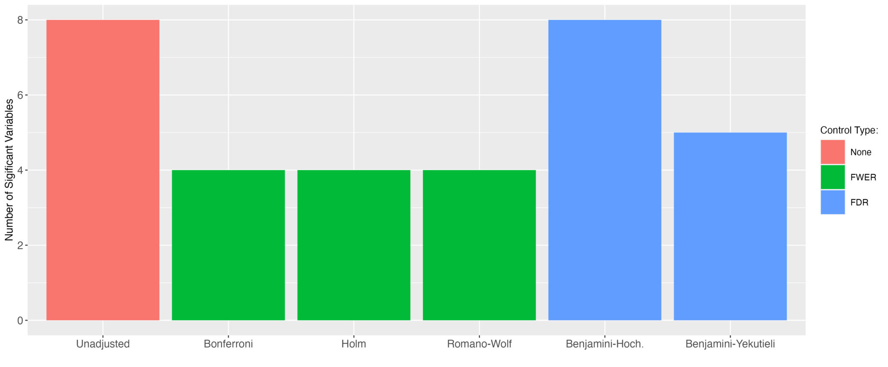

Multiple Testing: Methods Overview (Part 1)
Background
The abundance of data around us is a major factor making the data science field so attractive. It enables all kinds of impactful, interesting, or fun analyses. I admit this is what got me into statistics and causal inference in the first place. However, this luxury has downsides – it might require deeper methodological knowledge and attention.
If we are interested in measuring statistical significance, the standard frequentist framework relies on testing a single hypothesis on any given dataset. Once we start using the same data multiple times – i.e., testing several hypotheses at once – as we often do, we might have to make some additional adjustments.
In this article, I will walk you through the most popular multiple hypotheses (MH) testing corrections. Common examples of when these come to play include estimating the impact of several variables on a single outcome or estimating the effect of an intervention on several subgroups of users to mine for heterogeneous treatment effects. Both scenarios are ubiquitous in most data analysis projects.
To illustrate the problem, imagine we are testing seven hypotheses at the \(5\%\) significance level. Then, the probability that we incorrectly reject at least one of these hypotheses is:
\[ 1 - (1-.05)^7 = .30. \]
That is, roughly one in three times, we will reach a wrong conclusion.
Vaguely speaking, MH adjustments can be viewed as inflating the calculated p-values and hence decreasing the probability that we reject any given hypothesis. In other words, we are accounting for using the data multiple times by making the definition of statistical significance more stringent.
Notation
We are interested in testing a bunch of m null hypotheses about a population parameter \(\beta\).
As a running example, you can think of \(\beta\) as the causal impact of a new product feature on user engagement and \(m\) as indexing some geographical regions such as cities. We are interested in whether the new feature is more impactful in some cities than others. We will denote these hypotheses with \(H_1, H_2, \dots, H_m\) and refer to their associated p-values with \(p_1, p_2, \dots, p_m\).
We use \(\alpha\) to denote the probability of a Type 1 error – rejecting a true null (i.e., a false positive). In technical jargon, we refer to \(\alpha\) as test size. We often choose \(\alpha=.05\), meaning that we are allowing a 5% chance that we will make such an error. This corresponds to the 95% confidence intervals that we often see.
Next, statistical power is the probability of correctly rejecting a false null hypothesis (i.e., a true positive). This is a desirable property – the higher it is, the better. While this terminology does not describe the entire hypothesis testing framework, it does cover what is necessary to continue reading the article.
A Closer Look
When is MH Control NOT Necessary
Multiple hypothesis adjustments are not required when:
- we are interested in a purely predictive model, such as in machine learning settings,
- we have an independent dataset for each correlated hypothesis,
- the dependent variables we are testing are not correlated. An example is testing the impact of a new feature or intervention on a set of outcomes unrelated to each other – e.g., health and education variables. In such cases, it is common to adjust for MH separately within the health- and education-related hypotheses.
Before we dive into the methods, let’s establish some basic terminology and notation.
FWER vs FDR
There are two distinct types of targets that data scientists are after. The first one was introduced in the 1950s by the famous statistician John Tukey and is called Familywise Error Rate (FWER). FWER is the probability of making at least one type 1 error:
\[ FWER = \mathbb{P} (\text{At Least 1 Type 1 Error}). \]
In the example from the introduction, \(FWER = 0.3\).
Controlling the FWER is good, but sometimes it is not great. It does what it is supposed to do – limit the number of false positives, but it is often too conservative. In practice, too few variables remain significant after such FWER adjustments, especially when testing many (as opposed to just a few) hypotheses.
To correct this, in the 1990s, Yoav Benjamini and Yosef Hochberg, conceptualized controlling the so-called False Discovery Rate (FDR). FDR is the expected proportion of false positives:
\[ FDR = \mathbb{E} \left[ \frac{\text{\# False Positives}}{\text{\# False Positives + \# True Positives} } \right]. \]
Take a minute to notice the significant difference between these two approaches. FWER controls the probability of having at least one false positive at \(\alpha\). At the same time, FDR is okay with having several false positives as long as they are (on average) less than \(\alpha\) of all hypotheses.
FWER is more conservative than FDR, resulting in fewer significant variables. In our example, applying an FWER adjustment as opposed to an FDR one will lead to fewer statistically significant differences in the impact of the new feature across various cities.
Let’s go over the most popular ways to control the FWER.
FWER Control
Bonferroni’s Procedure
You might have heard of this one. The procedure is extremely simple – it goes like this:
- reject \(H_i\) if \(p_i \times m \leq \alpha\) for all \(i\).
In words, we multiply all \(p\)-values by m and reject the hypotheses with adjusted \(p\)-values that are smaller than or equal to \(\alpha\).
The Bonferroni adjustment is often considered to control the FWER, but it actually controls an even more conservative target – the per-family error rate (PFER). PFER is the sum of probabilities of Type 1 error for all the hypotheses.
You correctly guessed that PFER is considered too strict. Although it is common in practice, there are better alternatives. While the Bonferroni correction is simple and elegant, it is always dominated by the Holm-Bonferroni procedure, so there is really no reason ever to use it.
Holm & Bonferroni’s Procedure
This adjustment offers greater statistical power than the Bonferroni method regardless of the test size without significantly compromising on simplicity. In algorithmic language:
- Order the \(p\)-values in ascending order – \(p_1, p_2, \dots, p_m.\)
- Reject the null hypothesis \(H_1,\dots H_{k-1}\), where \(k\) is the smallest index for which \(p_i \times (m+1-k) \leq \alpha\). Much like the Bonferroni method with a multiplication factor of (\(m+1-k\)) instead of \(m\).
These two procedures control the FWER by assuming a kind of a ‘worst-case’ scenario in which the \(p\)-values are close to being independent of each other. To see why this is the case, imagine the extreme opposite scenario in which there is perfect positive dependence. Then, there is effectively one test statistic, and FWER adjustment is unnecessary.
In practice, however, the \(p\)-values are often correlated, and exploiting this dependence can result in even more powerful FWER corrections. This can be achieved with various resampling methods, such as the bootstrap or permutation procedures.
Westfall & Young‘s Procedure
The Westfall & Young method, developed in the 1990s, was the first resampling procedure controlling the FWER. It uses the bootstrap to account for the dependence structure among the \(p\)-values and improves on Holm-Bonferroni’s method.
It goes roughly like this:
- Order the \(m\) \(p\)-values in ascending order – \(p_1, \dots, p_M\).
- Begin with a \(COUNTER_i = 0\) for each hypothesis \(i\).
- Take a bootstrap sample and compute the \(m\) \(p\)-values (\(p^*_1, \dots, p^*_m\))
- Define the successive minima by starting with the largest \(p\)-value (\(\tilde{p}_M=p^*_M\)) and for each subsequent hypothesis \(i\) taking the minimum between \(\tilde{p}_{i+1}\) and \(p^*_i\).
- This gives a list of \(p\)-values \(\tilde{p}_1, \dots, \tilde{p}_m\).
- If \(\tilde{p}_i \leq p_i\) add 1 unit to \(COUNTER_i\) for each \(i\).
- Repeat steps 3-5 above \(B\) times and compute the fraction \(\hat{p}_i = COUNT_i/B\).
- This gives a list of \(p\)-values \(\hat{p}_1, \dots, \hat{p}_m\).
- Enforce monotonicity by starting with \(\hat{p}_1\) and for each subsequent hypothesis \(i\) taking the maximum between \(\hat{p}_{i-1}\) and \(\hat{p}_i\).
- This final vector presents the FWER-adjusted \(p\)-values.
- Reject all null hypotheses \(i\) for which \(\hat{p}\leq \alpha\).
Yes, this is a complicated procedure. But it does offer substantial improvements in power, especially if the hypotheses are positively correlated.
Importantly, Westfall and Young’s method rests on a critical assumption called “subset pivotality.” Roughly speaking, this condition requires that the joint distribution of any subset of test statistics does not depend on whether the remaining hypotheses are true or not.
Software Package: multtest.
Romano & Wolf‘s Procedure(s)
This procedure improves on Westfall and Young’s method by not requiring a pivotality assumption. Here I am describing the method from Romano and Wolf’s 2005 Econometrica paper, although the authors have developed a few closely related FWER adjustments. This is the rough algorithm for it:
- Order the test statistics in descending order, \(t_1 \geq t_2 \geq, \dots, t_m\).
- Take B bootstrap samples, and for each hypothesis i compute the empirical distribution function of the successive maximum test statistic random variable.
- That is, the random variable of the maximum test statistic between \(t_i, t_{i+1}, \dots, t_m\).
- Call this distribution \(c(i)\).
- Reject \(H_i\) if \(t_i\) is greater than the 1-quantile of \(c(1)\).
- Denote by h the number of rejected hypotheses. If \(h=0\) stop. Otherwise, for \(H_{h+1},\dots H_s\):
- Reject \(H_i\) if \(t_i > c(h+1)\)
- Iterate until no further hypotheses are rejected.
And you thought the Westfall and Young correction was tricky. The good news is that there are software packages for all these adjustments, so you won’t have to program them yourself. Arguably, this one of the best ways to control FWER; does not rest on pivotality assumptions. However, it can be difficult to explain to non-technical audiences; difficult to explain to anyone, really.
Software Package: hdm.
This wraps up the descriptions of the methods controlling the FWER.
FDR Control
As a reminder, FDR procedures have greater power at the cost of increased rates of type 1 errors compared to FWER adjustments. This is the dominant framework in the modern literature on MH adjustment.
Benjamini & Hochberg‘s Procedure
The Benjamini-Hochberg (BH) method is simple:
- Order the \(p\)-values in ascending order – \(p_1, p_2, \dots, p_m\).
- Find the largest integer \(k\) such that \(p_k \times \frac{m}{k} \leq \alpha\).
- Reject the null hypotheses \(H_1, \dots, H_k\).
BH is valid when the tests are independent and in some, but not all, dependence scenarios. In general, FDR control is tricky with arbitrary dependence.
This adjustment has an interesting geometric interpretation:
- plot \(p\) versus \(k\),
- draw a line through the origin with a slope equal to \(frac{\alpha}{m}\),
- reject all hypotheses associated with the \(p\)-values on the left up to the last point below this line.
Benjamini & Yekutieli‘s Procedure
Benjamini and Yekutieli (BY) developed a refinement of the BH procedure, which adds a magical constant \(c(m)\):
- Order the \(p\)-values in ascending order – \(p_1, p_2, \dots, p_m\).
- Find the largest integer \(k\) such that \(p_k \times \frac{m.c(m)}{k}\leq \alpha\).
- Reject the null hypotheses \(H_1, \dots, H_k\).
The obvious question is in choosing the optimal value for \(c(m)\). You can view BH as a special case of BY with \(c(m)=1\). The authors show that the following choice works under any arbitrary dependence assumption:
\[ c(m) = \sum_{i=1}^m \frac{1}{i} \approx log(m) + 0.57721 + \frac{1}{2m}. \]
Fascinating. For most applications, this simple procedure provides a credible way of taming the false positives rate. There are improvements to this method, but it feels like we are entering a world in which we get theoretical gains with only limited practical implications.
The main way to improve on BH/BY is to know (or estimate) the share of false hypotheses among the ones we are testing. This, however, goes beyond the scope of the article.
Knockoffs
What if we would like to combine variable selection and control the FDR? BH and BY do not really tell us how to do that. Enter knockoffs. The knockoffs approach is the kid on the block, and it does more than just FDR control.
The idea behind the knockoffs is novel and unrelated to any of the methods I discussed above. Knockoffs are copies of the variables with specific properties. In particular, for each feature/covariate variable \(X\), we create a knockoff copy \(\tilde{X}\) such that the correlation structure between any two knockoff variables is the same as between their original counterparts. These knockoffs are constructed without looking at the outcome variable; hence, they are unrelated to it by design. Consequently, we can gauge whether each variable is statistically significant by comparing its test statistic to that of the one for its knockoff copy.
Knockoffs are among the most active fields of research in statistics, with new papers coming out daily (ok, maybe weekly). These methods come in two flavors.
The fixed-design knockoff filter controls FDR for low-dimensional linear models regardless of the dependency structure of the features. This is great, but it does not work in high dimensions where variable selection is usually most needed.
The model-X knockoff filter solves this issue but requires exact knowledge of the joint distribution of the features. This is often infeasible in practice; even estimating that distribution in high dimensions can be really challenging as the curse of dimensionality lays its hammer on the data scientist.
The knockoff idea presents a big step forward because it solves two statistical problems at the same time – selecting among a wide set of predictors and controlling the FDR. I am really excited to see where the current research will take us next.
Software Package: knockoff.
Other Modern Methods
There is certainly no shortage of statistical methods in this field. Each week, there is at least one new paper dealing with some aspects of FDR or FWER control. Knockoffs, in particular, have gotten a lot of attention recently, with researchers extending the idea to all kinds of settings and models.
I will briefly mention some of the newer methods that have caught my eye in recent months. Many of these control the FDR asymptotically, and some are valid under general dependency structures among the test statistics.
One recent variation of the knockoffs idea uses Gaussian Mirrors; while others rely on subsampling approaches – Data Splitting (based on estimating two independent regression coefficients after splitting the dataset in half) and Data Aggregation. Clever ideas to improve power include using covariate information to optimally weigh hypotheses in the BH framework or incorporating them into FDR regressions.
Time will show whether any of these newcomers will come to dominate in practice.
An Example
I used the popular Titanic dataset (\(n=889\)) to illustrate some of the methods I discussed above. Check the Kaggle website carefully for the descriptions of each variable. The outcome/response variable, survived, indicated whether the passenger survived the disaster (mean=\(0.382\)), while the predictors included demographic characteristics (e.g., age, gender) as well as some information about the travel ticket (e.g., cabin number, fare).

Here is a table of the \(p\)-values for each feature and various MH adjustments.
| Raw | Bonferroni | Holm | Rom.-Wolf | Benj.-Hoch. | Benj.-Yek. | |
|---|---|---|---|---|---|---|
| 0.00 | 0.00 | 0.00 | 0.00 | 0.00 | 0.00 | |
| age | 0.00 | 0.02 | 0.01 | 0.01 | 0.00 | 0.01 |
| sibsp | 0.02 | 0.34 | 0.18 | 0.16 | 0.04 | 0.14 |
| parch | 0.32 | 1.00 | 1.00 | 0.77 | 0.40 | 1.00 |
| fare | 0.22 | 1.00 | 1.00 | 0.66 | 0.30 | 0.98 |
| male | 0.00 | 0.00 | 0.00 | 0.00 | 0.00 | 0.00 |
| embarkedC | 0.01 | 0.23 | 0.15 | 0.14 | 0.04 | 0.13 |
| embarkedQ | 0.05 | 0.76 | 0.35 | 0.29 | 0.09 | 0.28 |
| cabinA | 0.39 | 1.00 | 1.00 | 0.77 | 0.42 | 1.00 |
| cabinB | 0.37 | 1.00 | 1.00 | 0.77 | 0.42 | 1.00 |
| cabinC | 0.92 | 1.00 | 1.00 | 0.92 | 0.92 | 1.00 |
| cabinD | 0.06 | 0.89 | 0.36 | 0.29 | 0.09 | 0.30 |
| cabinE | 0.01 | 0.07 | 0.05 | 0.05 | 0.01 | 0.05 |
| cabinF | 0.02 | 0.31 | 0.18 | 0.16 | 0.04 | 0.14 |
Eight variables were statistically significant without any MH adjustment. As expected, the FWER adjustments lead to fewer significant variables than the FDR ones. Interestingly, there is a noticeable difference between the two FDR methods – BH and BY, with the latter being more conservative.
You can find the code for this analysis in this GitHub repository.
Bottom Line
Multiple testing corrections are likely necessary when you are using a single dataset multiple times (i.e., testing multiple hypotheses).
Two major frameworks exist – FWER and FDR control. The former is often considered too conservative, while the latter is the dominant way researchers and practitioners think about correcting for MH testing.
In most settings, the Benjamini-Yekuiteli approach offers a great balance between statistical power and technical simplicity.
Knockoffs are a novel and exciting approach to FDR control.
Where to Learn More
Wikipedia is a great resource on the classic approaches to tackling MH issues (both for FDR and FWER control), but it lacks material on modern methodologies. Emmanuel Candès’ website features an accessible introduction to the world of knockoffs. Clarke et al. (2020) strip down many technicalities and provide accessible descriptions of both Westfall and Young’s, as well as Romano and Wolf’s methods. Korthauer et al. (2019) compare some of the more recent approaches to controlling the FDR, which are beyond the scope of this blog post.
References
Barber, R. F., & Candès, E. J. (2015). Controlling the false discovery rate via knockoffs. The Annals of Statistics, 43(5), 2055-2085.
Benjamini, Y., & Yekutieli, D. (2001). The control of the false discovery rate in multiple testing under dependency. Annals of Statistics, 1165-1188.
Benjamini, Y., & Hochberg, Y. (1995). Controlling the false discovery rate: a practical and powerful approach to multiple testing. Journal of the Royal statistical society: series B (Methodological), 57(1), 289-300.
Candes, E., Fan, Y., Janson, L., & Lv, J. (2018). Panning for gold:’model‐X’knockoffs for high dimensional controlled variable selection. Journal of the Royal Statistical Society: Series B (Statistical Methodology), 80(3), 551-577.
Clarke, D., Romano, J. P., & Wolf, M. (2020). The Romano–Wolf multiple-hypothesis correction in Stata. The Stata Journal, 20(4), 812-843.
Dai, C., Lin, B., Xing, X., & Liu, J. S. (2022). False discovery rate control via data splitting. Journal of the American Statistical Association, 1-38.
Korthauer, K., Kimes, P. K., Duvallet, C., Reyes, A., Subramanian, A., Teng, M., … & Hicks, S. C. (2019). A practical guide to methods controlling false discoveries in computational biology. Genome biology, 20(1), 1-21.
Romano, J. P., & Wolf, M. (2005). Stepwise multiple testing as formalized data snooping. Econometrica, 73(4), 1237-1282.
Romano, J. P., & Wolf, M. (2005). Exact and approximate stepdown methods for multiple hypothesis testing. Journal of the American Statistical Association, 100(469), 94-108.
Westfall, P. H., & Young, S. S. (1993). Resampling-based multiple testing: Examples and methods for p-value adjustment (Vol. 279). John Wiley & Sons.
Xing, X., Zhao, Z., & Liu, J. S. (2021). Controlling false discovery rate using gaussian mirrors. Journal of the American Statistical Association, 1-20.